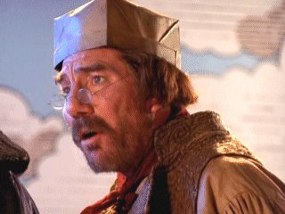
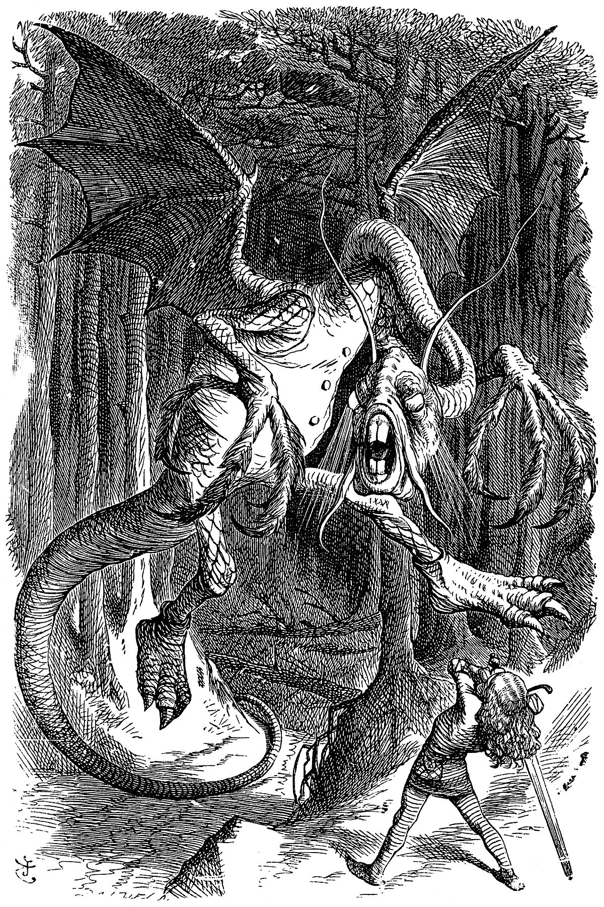

One, two! One, two! And through and through
The vorpal blade went snicker-snack!
He left it dead, and with its head
He went galumphing back.
It's now time to SLAY the JABBERWOCK! But do not fear! You have made many friends along the way!
You've met many CHARACTERS across TIME who are IN ORDER to CUT the beast down!
It is in this way that the secondary characters of the past and the NAMES before and behind them become the KEY characters of the present.
Good luck!

.../SeekTheJabberwock/BlueCaterpillar/TheRose/CheshireCat/TheDuck/Carpenter/???